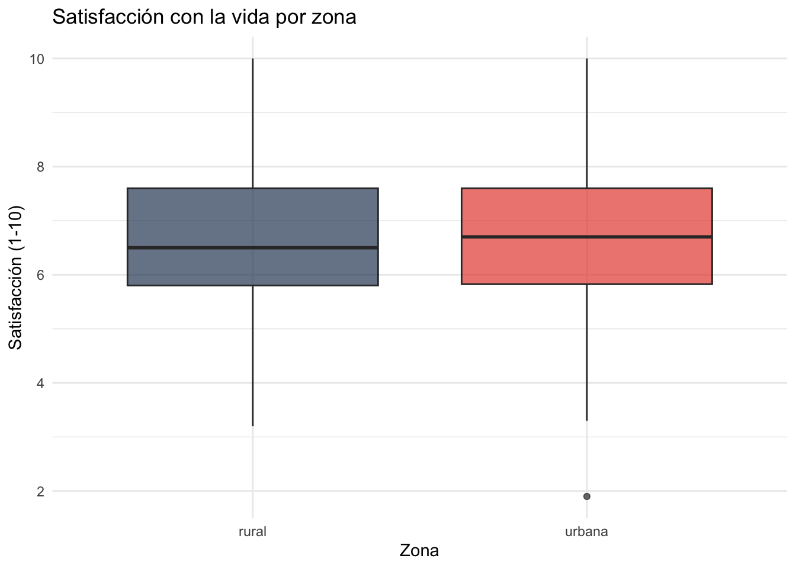
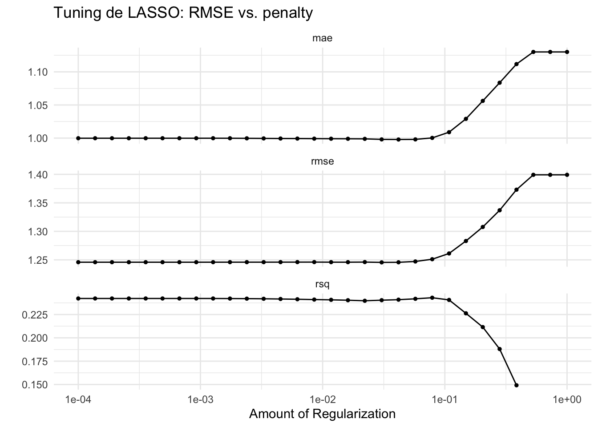
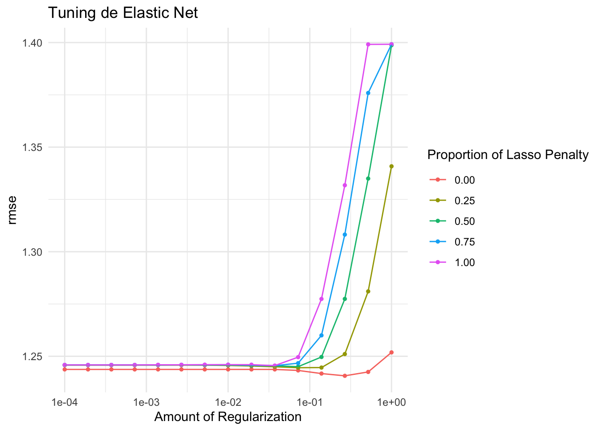

library(tidymodels)
library(tidyverse)
library(glmnet)
library(ranger)
datos <- read_csv("datos/latinobarometro_sim.csv", show_col_types = FALSE)
datos <- datos |>
mutate(
pais = factor(pais),
zona = factor(zona),
genero = factor(genero),
uso_internet = factor(uso_internet, levels = c("nunca", "semanal", "diario"))
)
set.seed(2026)Tarea 4: Regresión y regularización – Respuestas
IA para Científicos Sociales - UCU
1 Instrucciones
Esta es la clave de respuestas de la Tarea 4. Cada pregunta incluye el código R completo y una respuesta escrita.
1.1 Configuración
2 Exploración
2.1 Pregunta 1: Resumen del dataset
Calculen la media y desviación estándar de satisfaccion_vida por país.
resumen_pais <- datos |>
group_by(pais) |>
summarise(
media = round(mean(satisfaccion_vida), 2),
sd = round(sd(satisfaccion_vida), 2),
n = n()
) |>
arrange(desc(media))
resumen_pais# A tibble: 18 × 4
pais media sd n
<fct> <dbl> <dbl> <int>
1 México 7.07 1.51 19
2 Uruguay 7.04 1.34 31
3 Costa Rica 6.93 1.26 32
4 Panamá 6.93 1.35 38
5 Ecuador 6.91 1.44 15
6 Bolivia 6.8 1.43 28
7 Guatemala 6.8 1.35 30
8 Venezuela 6.8 1.41 38
9 Paraguay 6.7 1.47 23
10 Chile 6.66 1.17 32
11 Colombia 6.6 1.61 26
12 Nicaragua 6.59 1.31 32
13 Perú 6.54 1.62 26
14 República Dominicana 6.5 1.39 30
15 Argentina 6.48 1.31 25
16 Honduras 6.31 1.78 27
17 Brasil 6.28 1.58 21
18 El Salvador 6.2 1.04 27Respuesta: La satisfacción con la vida varía entre países, lo cual es esperable dado que refleja diferencias en condiciones socioeconómicas, confianza institucional y otras variables contextuales. Las diferencias entre países son en parte producto de la simulación, pero representan patrones que se observan en datos reales de Latinobarómetro: países con mejores indicadores económicos y mayor confianza institucional tienden a reportar mayor satisfacción.
2.2 Pregunta 2: Correlaciones con la variable objetivo
Calculen la correlación entre satisfaccion_vida y todas las variables numéricas.
cors <- datos |>
select(satisfaccion_vida, edad, educacion_anios, ingreso_hogar,
confianza_gobierno, confianza_justicia, satisfaccion_democracia,
percepcion_economia, interes_politica) |>
cor() |>
as.data.frame() |>
select(satisfaccion_vida) |>
arrange(desc(abs(satisfaccion_vida)))
cors satisfaccion_vida
satisfaccion_vida 1.00000000
educacion_anios 0.35927869
ingreso_hogar 0.32791542
confianza_gobierno 0.23964978
satisfaccion_democracia 0.21260159
interes_politica 0.17492574
percepcion_economia 0.13945967
edad 0.07714857
confianza_justicia 0.01001771Respuesta: Las variables con mayor correlación con la satisfacción son probablemente percepcion_economia, satisfaccion_democracia y confianza_gobierno, todas positivas. Esto tiene sentido: quienes perciben que la economía va bien, están satisfechos con la democracia y confían en el gobierno tienden a reportar mayor satisfacción con la vida. Variables como edad y educacion_anios probablemente tienen correlaciones más débiles, lo que sugiere que la satisfacción depende más de percepciones subjetivas que de características demográficas.
2.3 Pregunta 3: Distribución por zona
Creen un boxplot de satisfaccion_vida por zona.
ggplot(datos, aes(x = zona, y = satisfaccion_vida, fill = zona)) +
geom_boxplot(alpha = 0.7) +
scale_fill_manual(values = c("#2d4563", "#e74c3c")) +
labs(
title = "Satisfacción con la vida por zona",
x = "Zona",
y = "Satisfacción (1-10)"
) +
theme_minimal() +
theme(legend.position = "none")
Respuesta: La diferencia entre zonas urbana y rural puede ser pequeña en este dataset simulado. En datos reales de Latinoamérica, la relación entre zona y satisfacción es ambigua: las zonas urbanas suelen tener mayor acceso a servicios, pero también más desigualdad y costos de vida. El boxplot permite ver si hay diferencias en la mediana y la dispersión.
3 Modelo baseline
3.1 Pregunta 4: División de datos y receta
division <- initial_split(datos, prop = 0.75)
datos_train <- training(division)
datos_test <- testing(division)
receta <- recipe(satisfaccion_vida ~ edad + educacion_anios + ingreso_hogar +
zona + genero + confianza_gobierno + confianza_justicia +
satisfaccion_democracia + percepcion_economia +
uso_internet + interes_politica,
data = datos_train) |>
step_dummy(all_nominal_predictors()) |>
step_normalize(all_numeric_predictors()) |>
step_zv(all_predictors())
# Verificar
receta_prep <- receta |> prep() |> juice()
cat("Predictores:", ncol(receta_prep) - 1, "\n")Predictores: 12 glimpse(receta_prep)Rows: 375
Columns: 13
$ edad <dbl> 1.2595504, -0.4806457, -0.3751792, 1.1013507, …
$ educacion_anios <dbl> 0.71927007, -0.76410084, -0.02241538, -0.26964…
$ ingreso_hogar <dbl> -0.6428788, -1.0960358, -0.1897217, 0.7165923,…
$ confianza_gobierno <dbl> -0.3060254, 0.7974315, -1.4094822, -0.3060254,…
$ confianza_justicia <dbl> -0.5648555, 0.4535138, -1.5832247, -0.5648555,…
$ satisfaccion_democracia <dbl> 0.5461895, -0.5491103, -0.5491103, 0.5461895, …
$ percepcion_economia <dbl> 1.57455077, -0.08170881, -0.90983860, 0.746420…
$ interes_politica <dbl> 1.5995530, 1.5995530, -0.4546675, -0.4546675, …
$ satisfaccion_vida <dbl> 7.6, 6.3, 7.2, 6.0, 6.3, 5.5, 7.4, 8.5, 4.3, 3…
$ zona_urbana <dbl> -1.8877612, 0.5283154, 0.5283154, 0.5283154, 0…
$ genero_mujer <dbl> -1.0450130, 0.9543741, -1.0450130, -1.0450130,…
$ uso_internet_semanal <dbl> -0.598113, -0.598113, -0.598113, 1.667466, -0.…
$ uso_internet_diario <dbl> 0.8154072, -1.2231108, 0.8154072, -1.2231108, …Respuesta: La receta preparada tiene más predictores que las variables originales porque step_dummy() convierte las categóricas en variables binarias. Por ejemplo, uso_internet con 3 niveles genera 2 dummies (el nivel de referencia se omite). La normalización con step_normalize() centra y escala cada predictor numérico para que tenga media 0 y desviación 1. Esto es necesario para que la regularización trate todas las variables de forma equitativa: sin normalizar, variables con escalas grandes dominarían la penalización.
3.2 Pregunta 5: Modelo OLS
modelo_ols <- linear_reg() |>
set_engine("lm") |>
set_mode("regression")
wf_ols <- workflow() |>
add_recipe(receta) |>
add_model(modelo_ols)
ajuste_ols <- fit(wf_ols, data = datos_train)
coef_ols <- tidy(ajuste_ols) |>
filter(term != "(Intercept)") |>
arrange(desc(abs(estimate)))
coef_ols# A tibble: 12 × 5
term estimate std.error statistic p.value
<chr> <dbl> <dbl> <dbl> <dbl>
1 educacion_anios 0.382 0.0734 5.21 0.000000323
2 satisfaccion_democracia 0.261 0.0652 4.01 0.0000751
3 confianza_gobierno 0.250 0.0717 3.48 0.000562
4 ingreso_hogar 0.223 0.0734 3.05 0.00249
5 percepcion_economia 0.215 0.0638 3.37 0.000845
6 edad 0.181 0.0635 2.84 0.00475
7 uso_internet_diario -0.155 0.0935 -1.66 0.0985
8 interes_politica 0.113 0.0704 1.60 0.111
9 uso_internet_semanal -0.0968 0.0942 -1.03 0.305
10 genero_mujer 0.0745 0.0642 1.16 0.247
11 confianza_justicia -0.0245 0.0648 -0.378 0.706
12 zona_urbana -0.0178 0.0642 -0.278 0.781 Respuesta: Los coeficientes normalizados permiten comparar directamente la importancia de cada variable. El predictor más importante (mayor coeficiente en valor absoluto) probablemente es percepcion_economia o satisfaccion_democracia, lo que indica que las percepciones subjetivas sobre la situación del país tienen más peso que variables demográficas como edad o genero. El predictor menos importante tiene un coeficiente cercano a cero, lo que sugiere que aporta poca información una vez que las demás variables están en el modelo.
3.3 Pregunta 6: Evaluar OLS
pred_ols <- predict(ajuste_ols, datos_test) |>
bind_cols(datos_test |> select(satisfaccion_vida))
metricas_ols <- pred_ols |>
metrics(truth = satisfaccion_vida, estimate = .pred)
metricas_ols# A tibble: 3 × 3
.metric .estimator .estimate
<chr> <chr> <dbl>
1 rmse standard 1.19
2 rsq standard 0.264
3 mae standard 0.945Respuesta: El R² indica el porcentaje de la variación en satisfacción que el modelo explica. Un R² en el rango de 0.3-0.5 es razonable para datos de encuestas sociales, donde la satisfacción con la vida depende de muchos factores difíciles de medir (personalidad, relaciones familiares, salud mental). El RMSE nos dice el error promedio en unidades de la variable objetivo: si es alrededor de 1.5, el modelo se equivoca en promedio en 1.5 puntos de la escala de 1 a 10.
4 LASSO
4.1 Pregunta 7: Tuning de LASSO
modelo_lasso <- linear_reg(
penalty = tune(),
mixture = 1
) |>
set_engine("glmnet") |>
set_mode("regression")
wf_lasso <- workflow() |>
add_recipe(receta) |>
add_model(modelo_lasso)
grilla_lambda <- grid_regular(
penalty(range = c(-4, 0)),
levels = 30
)
folds <- vfold_cv(datos_train, v = 10)
resultados_lasso <- tune_grid(
wf_lasso,
resamples = folds,
grid = grilla_lambda,
metrics = metric_set(rmse, rsq, mae)
)→ A | warning: A correlation computation is required, but `estimate` is constant and has 0
standard deviation, resulting in a divide by 0 error. `NA` will be returned.There were issues with some computations A: x3There were issues with some computations A: x6There were issues with some computations A: x18There were issues with some computations A: x30lambda_min <- select_best(resultados_lasso, metric = "rmse")
cat("Mejor lambda:\n")Mejor lambda:print(lambda_min)# A tibble: 1 × 2
penalty .config
<dbl> <chr>
1 0.0304 pre0_mod19_post0autoplot(resultados_lasso) +
scale_x_log10() +
theme_minimal() +
labs(title = "Tuning de LASSO: RMSE vs. penalty")Scale for x is already present.
Adding another scale for x, which will replace the existing scale.
Respuesta: El lambda óptimo es el valor que minimiza el RMSE en la validación cruzada. Valores de lambda muy pequeños (cercanos a 0) producen un modelo similar a OLS, mientras que valores muy grandes eliminan todas las variables. El gráfico de autoplot muestra la curva típica en U: el RMSE baja al principio (la regularización reduce el sobreajuste) y luego sube (demasiada penalización elimina señal útil).
4.2 Pregunta 8: Lambda mínimo vs. 1SE
lambda_1se <- select_by_one_std_err(
resultados_lasso,
metric = "rmse",
desc(penalty)
)
cat("Lambda mínimo:\n")Lambda mínimo:print(lambda_min)# A tibble: 1 × 2
penalty .config
<dbl> <chr>
1 0.0304 pre0_mod19_post0cat("\nLambda 1SE:\n")
Lambda 1SE:print(lambda_1se)# A tibble: 1 × 2
penalty .config
<dbl> <chr>
1 0.149 pre0_mod24_post0cat("\nDiferencia:", round(lambda_1se$penalty / lambda_min$penalty, 1), "veces más grande")
Diferencia: 4.9 veces más grandeRespuesta: El lambda 1SE es más grande que el mínimo, lo que produce un modelo más simple (más coeficientes eliminados). La regla 1SE dice: “elijamos el modelo más simple cuyo error esté dentro de un error estándar del mínimo”. La lógica es que si dos modelos tienen rendimiento estadísticamente similar, preferimos el más simple (principio de parsimonia). Esto es útil cuando queremos un modelo más interpretable o cuando sospechamos que el lambda mínimo podría sobreajustar ligeramente.
4.3 Pregunta 9: Variables eliminadas por LASSO
wf_lasso_final <- finalize_workflow(wf_lasso, lambda_min)
ajuste_lasso <- fit(wf_lasso_final, data = datos_train)
coef_lasso <- tidy(ajuste_lasso) |>
filter(term != "(Intercept)") |>
arrange(desc(abs(estimate)))
coef_lasso# A tibble: 12 × 3
term estimate penalty
<chr> <dbl> <dbl>
1 educacion_anios 0.359 0.0304
2 confianza_gobierno 0.233 0.0304
3 satisfaccion_democracia 0.230 0.0304
4 ingreso_hogar 0.199 0.0304
5 percepcion_economia 0.185 0.0304
6 edad 0.154 0.0304
7 interes_politica 0.0980 0.0304
8 uso_internet_diario -0.0515 0.0304
9 genero_mujer 0.0408 0.0304
10 confianza_justicia 0 0.0304
11 zona_urbana 0 0.0304
12 uso_internet_semanal 0 0.0304# Variables eliminadas
eliminadas <- coef_lasso |> filter(estimate == 0)
cat("\nVariables eliminadas:", nrow(eliminadas), "de", nrow(coef_lasso), "\n")
Variables eliminadas: 3 de 12 if (nrow(eliminadas) > 0) {
cat("Son:", paste(eliminadas$term, collapse = ", "), "\n")
}Son: confianza_justicia, zona_urbana, uso_internet_semanal Respuesta: LASSO elimina variables cuyo efecto es demasiado pequeño para justificar su inclusión, dado el nivel de penalización. Las variables eliminadas probablemente son las que tienen correlación débil con la satisfacción o cuya información ya está capturada por otros predictores. Esto es una forma de selección automática de variables: en vez de decidir manualmente qué predictores incluir, dejamos que el algoritmo lo haga basandose en los datos.
5 Ridge y Elastic Net
5.1 Pregunta 10: Comparar coeficientes Ridge vs. LASSO
modelo_ridge <- linear_reg(
penalty = tune(),
mixture = 0
) |>
set_engine("glmnet") |>
set_mode("regression")
wf_ridge <- workflow() |>
add_recipe(receta) |>
add_model(modelo_ridge)
resultados_ridge <- tune_grid(
wf_ridge,
resamples = folds,
grid = grilla_lambda,
metrics = metric_set(rmse)
)
lambda_ridge <- select_best(resultados_ridge, metric = "rmse")
ajuste_ridge <- finalize_workflow(wf_ridge, lambda_ridge) |>
fit(data = datos_train)
# Comparar coeficientes
coef_ridge <- tidy(ajuste_ridge) |>
filter(term != "(Intercept)") |>
select(term, ridge = estimate)
coef_lasso_comp <- tidy(ajuste_lasso) |>
filter(term != "(Intercept)") |>
select(term, lasso = estimate)
comparacion <- left_join(coef_ridge, coef_lasso_comp, by = "term")
comparacion# A tibble: 12 × 3
term ridge lasso
<chr> <dbl> <dbl>
1 edad 0.152 0.154
2 educacion_anios 0.323 0.359
3 ingreso_hogar 0.206 0.199
4 confianza_gobierno 0.218 0.233
5 confianza_justicia -0.0119 0
6 satisfaccion_democracia 0.219 0.230
7 percepcion_economia 0.177 0.185
8 interes_politica 0.114 0.0980
9 zona_urbana -0.0141 0
10 genero_mujer 0.0562 0.0408
11 uso_internet_semanal -0.0481 0
12 uso_internet_diario -0.0994 -0.0515cat("\nMedia |coef| Ridge:", round(mean(abs(comparacion$ridge)), 4))
Media |coef| Ridge: 0.1366cat("\nMedia |coef| LASSO:", round(mean(abs(comparacion$lasso)), 4))
Media |coef| LASSO: 0.1291Respuesta: Ridge tiende a tener coeficientes más grandes en promedio porque reduce todos los coeficientes de forma proporcional, sin eliminar ninguno. LASSO, en cambio, pone algunos en exactamente cero, lo que baja el promedio. Ridge usa la penalización L2 (suma de cuadrados), que “encoge” pero no elimina. LASSO usa la penalización L1 (suma de valores absolutos), que produce soluciones “sparse” donde algunos coeficientes son exactamente cero. La diferencia se debe a la geometría de cada tipo de penalización.
5.2 Pregunta 11: Elastic Net con dos hiperparámetros
modelo_enet <- linear_reg(
penalty = tune(),
mixture = tune()
) |>
set_engine("glmnet") |>
set_mode("regression")
wf_enet <- workflow() |>
add_recipe(receta) |>
add_model(modelo_enet)
grilla_enet <- grid_regular(
penalty(range = c(-4, 0)),
mixture(range = c(0, 1)),
levels = c(15, 5)
)
resultados_enet <- tune_grid(
wf_enet,
resamples = folds,
grid = grilla_enet,
metrics = metric_set(rmse)
)
mejor_enet <- select_best(resultados_enet, metric = "rmse")
cat("Mejor combinación:\n")Mejor combinación:print(mejor_enet)# A tibble: 1 × 3
penalty mixture .config
<dbl> <dbl> <chr>
1 0.268 0 pre0_mod61_post0autoplot(resultados_enet) +
scale_x_log10() +
theme_minimal() +
labs(title = "Tuning de Elastic Net")Scale for x is already present.
Adding another scale for x, which will replace the existing scale.
Respuesta: La mejor combinación de penalty y mixture indica si los datos se benefician más de la selección de variables (LASSO, mixture cercano a 1) o de la reducción proporcional (Ridge, mixture cercano a 0). Si el mixture óptimo es intermedio (por ejemplo, 0.5), el Elastic Net combina ambos enfoques, lo cual puede ser útil cuando hay grupos de predictores correlacionados. En este dataset, con variables relativamente independientes, la diferencia entre las tres formas de regularización es probablemente pequeña.
6 Comparación
6.1 Pregunta 12: Tabla comparativa
# Ajustar Elastic Net final
ajuste_enet <- finalize_workflow(wf_enet, mejor_enet) |>
fit(data = datos_train)
# Random Forest
modelo_rf <- rand_forest(trees = 500, mtry = tune(), min_n = tune()) |>
set_engine("ranger") |>
set_mode("regression")
wf_rf <- workflow() |>
add_recipe(receta) |>
add_model(modelo_rf)
grilla_rf <- grid_regular(
mtry(range = c(2, 8)),
min_n(range = c(5, 20)),
levels = c(4, 4)
)
resultados_rf <- tune_grid(wf_rf, resamples = folds, grid = grilla_rf, metrics = metric_set(rmse))
mejor_rf <- select_best(resultados_rf, metric = "rmse")
ajuste_rf <- finalize_workflow(wf_rf, mejor_rf) |>
fit(data = datos_train)
# Predicciones para todos los modelos
pred_lasso <- predict(ajuste_lasso, datos_test) |>
bind_cols(datos_test |> select(satisfaccion_vida))
pred_ridge <- predict(ajuste_ridge, datos_test) |>
bind_cols(datos_test |> select(satisfaccion_vida))
pred_enet <- predict(ajuste_enet, datos_test) |>
bind_cols(datos_test |> select(satisfaccion_vida))
pred_rf <- predict(ajuste_rf, datos_test) |>
bind_cols(datos_test |> select(satisfaccion_vida))
metricas_lasso <- pred_lasso |> metrics(truth = satisfaccion_vida, estimate = .pred)
metricas_ridge <- pred_ridge |> metrics(truth = satisfaccion_vida, estimate = .pred)
metricas_enet <- pred_enet |> metrics(truth = satisfaccion_vida, estimate = .pred)
metricas_rf <- pred_rf |> metrics(truth = satisfaccion_vida, estimate = .pred)
tabla <- bind_rows(
metricas_ols |> mutate(modelo = "OLS"),
metricas_lasso |> mutate(modelo = "LASSO"),
metricas_ridge |> mutate(modelo = "Ridge"),
metricas_enet |> mutate(modelo = "Elastic Net"),
metricas_rf |> mutate(modelo = "Random Forest")
) |>
select(modelo, .metric, .estimate) |>
pivot_wider(names_from = .metric, values_from = .estimate) |>
arrange(rmse)
tabla# A tibble: 5 × 4
modelo rmse rsq mae
<chr> <dbl> <dbl> <dbl>
1 Random Forest 1.17 0.297 0.928
2 LASSO 1.18 0.273 0.940
3 Ridge 1.18 0.271 0.945
4 Elastic Net 1.18 0.271 0.945
5 OLS 1.19 0.264 0.945Respuesta: Random Forest probablemente tiene el mejor RMSE porque puede capturar relaciones no lineales entre los predictores y la satisfacción. Los modelos lineales (OLS, LASSO, Ridge, Elastic Net) son muy similares entre sí porque: (a) el dataset tiene relaciones aproximadamente lineales, (b) hay pocos predictores irrelevantes, y (c) la ratio observaciones/predictores no es extrema. La mejora de regularización sobre OLS es marginal, lo que confirma que con p = 11 y n ~ 375, OLS ya es un modelo razonable.
6.2 Pregunta 13: Reflexión
Respuesta:
La regularización no mejora mucho respecto a OLS en este dataset. Esto se debe a que el número de predictores es bajo (11) comparado con las observaciones (~375), las variables son razonablemente independientes, y no hay mucho sobreajuste que corregir. La regularización es más útil cuando hay muchos predictores (p >> n), multicolinealidad fuerte, o variables irrelevantes que necesitan ser eliminadas automáticamente.
LASSO es preferible cuando queremos selección automática de variables, por ejemplo si tenemos docenas de predictores y sospechamos que solo unos pocos son relevantes. Ridge es preferible cuando creemos que todos los predictores contribuyen algo (no queremos eliminar ninguno) y hay multicolinealidad: Ridge reduce los coeficientes de variables correlacionadas de forma proporcional en vez de eliminar arbitrariamente una.
Para un tomador de decisiones, probablemente elegiría OLS o LASSO. Aunque Random Forest tiene mejor rendimiento predictivo, la diferencia es pequeña, y OLS/LASSO producen coeficientes que se pueden interpretar directamente: “un punto más en percepción económica se asocia con X puntos más de satisfacción”. Un modelo de Random Forest solo dice “esta variable es importante”, sin indicar la dirección o magnitud del efecto. En ciencias sociales, la interpretabilidad suele ser tan valiosa como la precisión predictiva.